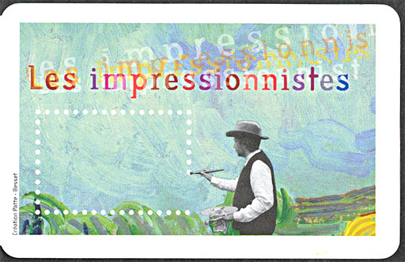
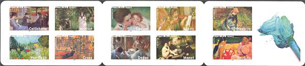
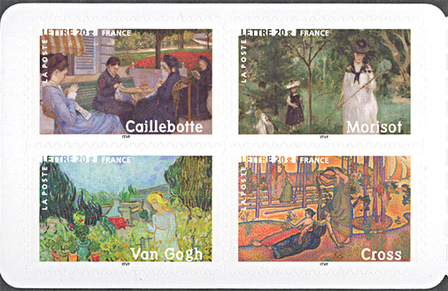
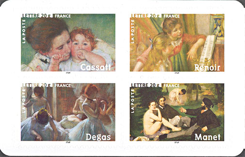
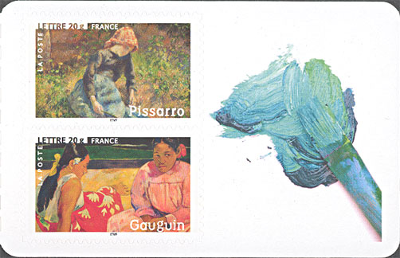
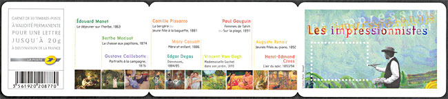
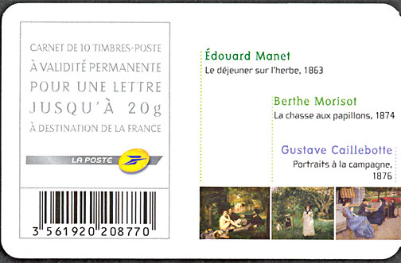
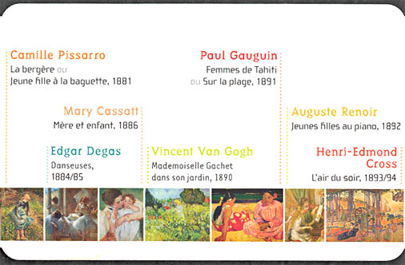
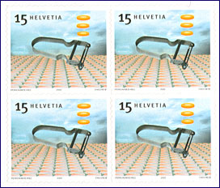

Impressionists Booklet
And what thought about it the French philatelists from FRP
On the 6th of February 2006 the French postal administration issued a ten stamps self-adhesive booklet (named "Carnet artistique") that displays the works of ten great French painters, grouped here under the name of Impressionists. The stamps are described on the booklet itself (see below on the page) as "à validité permanente", which obviously means "of a permanent validity". The booklet says also that they are valid for a letter till 20 grams sent to any destination in France. Being of a permanent validity, no face value is shown on these stamps.

The French post calls this stamps also "semi-permanent", which means "half-permanent". Thanks to a posting in the newsgroup news:fr.rec.philatelie (frp) I have learned that this means that they are a kind of half-definitive. It's an indication that they aren't produced in large quantities like the real definitives but still in quantities that exceed the usual definitive issues.

Because the most of stamps were painted by largely known painters, I'll let to my followers and imitators to use this unique occasion for completing their stamp related encyclopedias, by displaying the stamps and by copying-pasting texts from Encarta, etc., filling this way all free spaces.

My approach will be a bit different. Because this issue has unleashed a large discussion (but unfortunately, not a polemics... because a large majority simply was against this issue), I'll cite some interesting excerpts, so that you, my reader, get the opportunity to compare what the participants in frp said with the stamps themselves, and draw your own conclusions.

- Il y a suffisamment d'horreurs sur internet comme ça pour ne pas en rajouter une de plus. (After being asked to publish a scan - n.a.) There are sufficient horrors on the Internet for not publish one more.
- Merci XXX effectivement, ça a l'air assez nullissime. Vraiment pas "lisible" cette émission ...
Thanks XXX indeed it looks like a big zero. It isn’t really “readable” this issue.

- Ben finalement c'est peut-être pas le scan de la poste qui est flou ce carnet devrait s'intituler : "petits extraits d'ouvres connues revisitées par un imprimeur myope et parkinsonien"
Finally, it is possibly that not the scan of the post is blurred (;) this booklet should be called: “small excerpts of works continually revisited by a short-sighted and parkinsonic printer.”

- Effectivement, reproduire sur un format carnet autocollant une infime partie d'un tableau d'époque impressionniste laisse plus qu'à désirer. Je n'en voit pas l'intérêt artistique.
To reproduce on the format of a self-adhesive booklet a tiny part of a painting of impressionist period leaves a lot to be desired indeed.

- Mettre des tableaux de cette qualité dans un format tel que celui qui nous est présenté par la poste c'est pas terrible effectivement,
To put the paintings of these quality in a format like those presented by the post isn’t really great.

- C'est toujours mieux d'avoir le choix plutôt que d'être obligé d'utiliser la banale Marianne.
It is better to have a choice then to be obliged to use the commonplace Marianne.Finally, an almost dissident opinion. One can really wonder why this nice issue was so negatively received by the frp-ists. Were they for too many years spoiled by the beautiful big format art issues of the French post office?

Then they should eventually use one of the classics of the Swiss design, like the one shown above. It was also recently issued, by the Swiss post, and it is now quite the single choice in Switzerland for one who wants applying a self-adhesive art stamp on a cover...